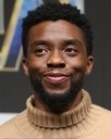
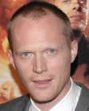
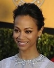
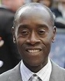
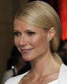
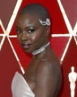

어벤져스 실사영화 시리즈의 3번째 작품이자 마블 시네마틱 유니버스 페이즈 3의 7번째 작품이다.
감독은 윈터 솔져와 시빌 워를 연출한 루소 형제.
이 전까지 마블 시네마틱 유니버스에서 일어난 모든 사건의 흑막인 타노스가 직접적으로 메인 빌런으로 등장하며, 같은 세계관에 속해 있음에도 서로 만난 적이 없던 가디언즈 오브 갤럭시와 마법사들까지 모두 출연한 작품이다.
| 조 루소 (감독) |
안소니 루소 (감독) |
로버트 다우니 주니어 (토니 스타크) |
조쉬 브롤린 (타노스) |
크리스 헴스워스 (토르) |
|---|
|  | ||||
|---|---|---|---|---|
| 베네딕트 컴버배치 (닥터 스트레인지) |
크리스 프랫 (피터 퀼) |
마크 러팔로 (브루스 배너) |
톰 홀랜드 (피터 파커) |
채드윅 보스만 (티 찰라) |
 |
 |  | ||
|---|---|---|---|---|
| 크리스 에반스 (스티브 로저스) |
스칼렛 요한슨 (나타샤 로마노프) |
엘리자베스 올슨 (완다 막시모프) |
폴 베타니 (비전) |
조 샐다나 (가모라) |
|  | ||||
|---|---|---|---|---|
| 안소니 마키 (샘 윌슨) |
톰 히들스턴 (로키) |
돈 치들 (제임스 로드) |
브래들리 쿠퍼 (로켓) |
빈 디젤 (그루트) |
|  |  |
|||
|---|---|---|---|---|
| 데이브 바티스타 (드랙스) |
세바스찬 스탠 (버키 반즈) |
기네스 팰트로 (페퍼 포츠) |
폼 클레멘티에프 (맨티스) |
레티티아 라이트 (슈리) |
|  |  |
|||
|---|---|---|---|---|
| 카렌 길런 (네뷸라) |
다나이 구리라 (오코예) |
베네딕트 웡 (웡) |
사무엘 L. 잭슨 (닉 퓨리) |
코비 스멀더스 (마리아 힐) |
피터 파커 : 제발요 스타크씨 제발 살려줘요. 저 죽기 싫어요..
닥터 스트레인지 : It's end game
닉 퓨리 : 어머니
티 찰라 : 와칸다 포에버!
피터 퀼 : 가모라를 어떻게 한거야!!(퍽퍽)
피터 파커 : 구해야 할 이웃이없다면 스파이더맨도 필요하지 않죠
토르 : 죽은 적은 많지만 이번엔 진짜인 것 같아
역대 최강의 빌런 타노스와 독립 영화들에서 이미 개성을 인정받은 20명 이상의 마블 히어로들이 출연하는 영화답게, 개성있는 인물들의 입체적인 상호작용을 통한 전개를 보여주면서 관객들이 상황들에 쉽게 몰입할 수 있게 해 주었다. 또한 지난 캡틴 아메리카: 시빌 워에서 증명된 루소 형제의 뛰어난 캐릭터별 분량 분배 능력은 이번에도 거의 모든 캐릭터들에게 적당한 스크린 타임과 납득이 가는 스토리라인을 줌으로써 훌륭하게 발휘되었다는 평이다. 인피니티 워에서 캐릭터당 등장시간을 정리한 문서. 특히 비전같이 처음부터 공격을 맞아 전투가 불가능 했거나, 헐크 같이 싸움을 거부하는 케이스도 네임드 악역 하나를 처리하는 장면을 넣거나 멋진 단독 액션씬을 가짐으로써 각자 분량을 적절히 가져갔다. 또한 비극적이고 무거운 분위기로 흘러가는 영화임에도 등장인물들의 대화에서 유쾌함을 유발함으로서 마블 영화 특유의 유쾌한 면모를 잃지 않았다.
마블 시네마틱 유니버스의 클라이맥스 격인 영화 답게, 액션씬의 분량이 꽤 많다. 초반의 아스가르드 피난선 전투, 뉴욕 전투, 스코틀랜드 전투, 타이탄 행성의 전투 2번, 와칸다 전투까지 총 6번이 나온다. 1편 , 2편이랑은 전투씬 수는 같지만 초반 아스가르드 피난선을 빼고는 모두 히어로들이 힘을 합쳐 싸우는 장면이다보니 이전작과 달리 분량이 상당히 길다. 또한 전작에서 업그레이드 되거나 추가된 능력을 잘 활용한 편으로, 전작에서 소개된 블랙 팬서의 에너지 방출 능력, 닥터 스트레인지의 기존 미스틱 아츠와 새로운 기술들, 아이언맨과 스파이더맨의 새 수트 액션, 캡틴 아메리카의 새 방패 액션, 완다의 2년 간의 능력 컨트롤 상승으로 인한 향상된 염력 전투 등등, 전작보다 강화된 히어로들의 능력을 잘 살려, 더더욱 참신하고 박력 넘치는 액션의 향연을 보여 준다. 모두가 각자의 능력을 합쳐 하는 협동공격 장면 또한 매우 다채롭게 표현되었다.
그동안 마블 시네마틱 유니버스의 빌런들은 캐릭터로서 매력이 부족한 1회성 소모품이란 지적을 들어왔고 평면적인 캐릭터라는 비판을 받아왔다. 하지만 캡틴 아메리카: 시빌 워의 헬무트 제모 이후로 입체적이고 개성있는 빌런들이 출연하기 시작했고, 타노스는 그 중에서도 최고라는 평가를 받는다. 영화 초반부에서 어벤저스 최강 전력을 자랑하는 토르를 짓뭉게고, 헐크를 육체적인 싸움으로도 압도하는 모습을 통해서 타노스라는 인물이 얼마나 강한지를 보여줬다. 최강자의 카리스마와, 빌런의 동기와 신념이 작품속에 잘 나타났으며, 수양딸에 대한 사랑과 슬픔같은 인간적인 면모도 보여주면서도 빌런이라는 아이덴티티에 맞게 적절하게 녹여 입체적인 캐릭터를 만들었다.
영화상의 문제는 아니고 번역의 문제, 국내 한정이다. 번역을 담당한 박지훈이 일부 표현을 자의적으로 짜깁기하거나 아예 틀린 자막을 제시함으로써 마블의 역작이 한국 관람객들에게만 기묘한 뉘앙스를 풍기게 되었다. 그중 가장 심각한 것은 닥터 스트레인지의 "이제 최종단계(endgame)야"라는 발언을 "이제 가망이 없어"로 아예 동떨어진 의미로 제시해서 한국 관람객들이 영화의 큰 맥락을 제대로 받아들일 수 없게 한 것. 여태껏 박지훈의 오역이 미묘한 뉘앙스의 차이나 맥락을 고려하지 못한 것이 많았던 것에 비해 이건 시리즈 전체의 방향에 관해 큰 영향을 끼치는 수준이라 큰 비판을 받게 되었다.
닉 퓨리와 마리아 힐이 자동차를 타고 가는데, 반대편에서 오던 차가 그들 앞에서 제어를 잃고 사고를 낸다. 곧바로 사고를 낸 차량으로 힐이 가보지만 그곳에는 아무도 타고 있지 않았다. 곳곳에서 운전자가 사라진 차들이 충돌하고 길거리에서는 혼란에 빠진 사람들이 도망다니고 하늘에서는 조종사가 사라진 헬리콥터가 추락해 건물을 들이받아 폭발하는 아비규환의 상황. 이걸 본 닉 퓨리는 "코드 레드"를 외치고 힐에게 본부에 연락하라고 하나, 곧바로 힐이 먼지가 되어 사라진다. 뒤이어 닉 퓨리 바로 뒤에서 이 상황을 지켜보던 길가의 행인들도 먼지가 되어 사라지고 있었다. 이에 퓨리는 차 뒷좌석에 있던 호출기를 꺼내 급히 무언가를 호출하던 도중 버튼을 누름과 동시에 그 역시 먼지가 되어 사라지고 만다. 이후 퓨리가 들고 있던 호출기는 땅으로 떨어지고…
그 호출기에 캡틴 마블의 로고가 뜨며 끝. 그 후 "The Avengers Will Return(어벤져스는 돌아온다)"이 아닌 "Thanos Will Return.(타노스는 돌아온다)"이라는 문구가 나온다.